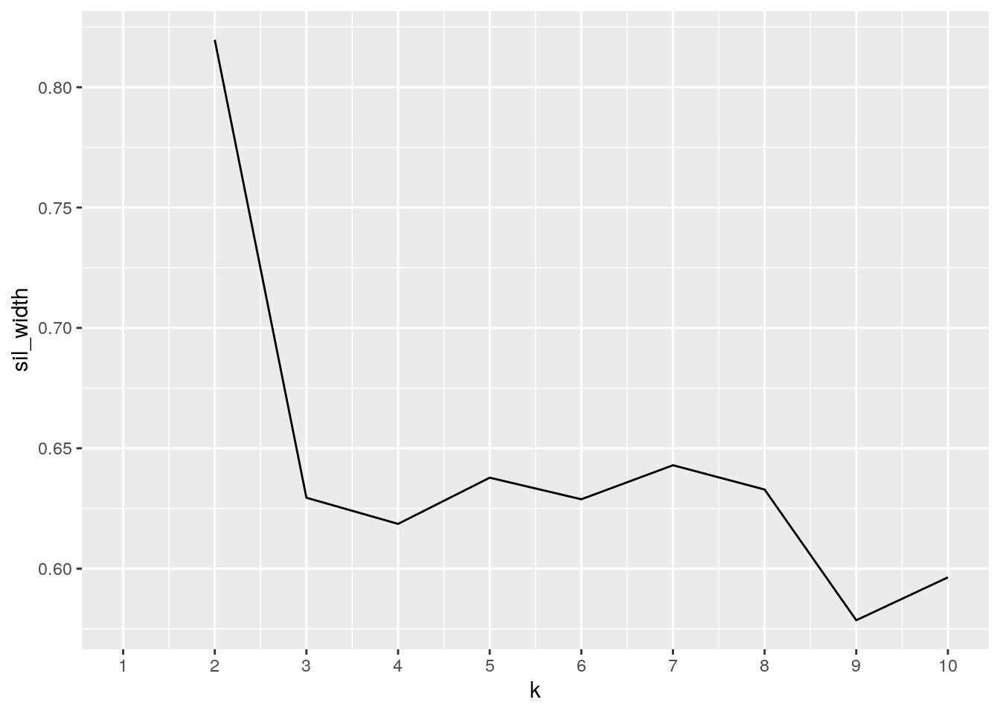

Prerequisite: Finding appropriate data from at least two sources per the instructions above: Failure to do this will result in a 0! You will submit a .Rmd file and a knitted document (pdf).
library(tidyverse)
library(dplyr)
icu <- read_csv("USE2_estimated_icu_20201011_0010.csv")
covid <- read_csv("USE2_estimated_inpatient_covid_20201011_0010.csv")
head(icu)## # A tibble: 6 x 4
## state date icubeds totalicubeds
## <chr> <chr> <dbl> <dbl>
## 1 CW 9/10/20 56942 79693
## 2 CW 9/11/20 56856 79569
## 3 CW 9/12/20 55810 79489
## 4 CW 9/13/20 54133 79389
## 5 CW 9/14/20 54169 79441
## 6 CW 9/15/20 56345 79903head(covid)## # A tibble: 6 x 4
## state date covidbeds totalinpatientbeds
## <chr> <chr> <dbl> <dbl>
## 1 CW 9/10/20 39106 715375
## 2 CW 9/11/20 38085 716669
## 3 CW 9/12/20 37329 714291
## 4 CW 9/13/20 36948 708206
## 5 CW 9/14/20 37392 712517
## 6 CW 9/15/20 37866 711547The two datasets I have chosen are from the United States Department of Health & Human Services. The first dataset called covid is a data that contains the estimated numbers of admitted patients affected by COVID-19 and total number of in-patient hospital beds of each state. The data was collected daily from September 10th, 2020 to October 10th, 2020. The second dataset called icu is also a data collected from the states that consists the estimated numbers of patients in ICU and total number of ICU beds. This data was also collected daily from September 10th, 2020 to October 10th, 2020. Both of the datasets were collected through Health & Human Services TeleTracking and direct reports from state health departments.
The covid dataset has 4 variables: state, date, covidbeds, and totalinpatientsbeds. The icu dataset also contains 4 variables: state, date, icubeds, and totalicubeds. I was interested in these datasets because they are very relevant to our world currently. Many people have lost their lives and their loved ones because of this virus. I wanted to look at if certain states or divisions of the US were more affected than the others. I think that the number of COVID patients admitted will have a positive correlation with the number of ICU patients because COVID patients who are admitted to the hospitals are more likely to be in a severe condition to be in ICU.
tidyr functions pivot_longer/gather and/or pivot_wider/spread)# making the dataset `covid` untidy
covid %>% pivot_longer(contains("beds"), names_to = "name", values_to = "value")## # A tibble: 3,286 x 4
## state date name value
## <chr> <chr> <chr> <dbl>
## 1 CW 9/10/20 covidbeds 39106
## 2 CW 9/10/20 totalinpatientbeds 715375
## 3 CW 9/11/20 covidbeds 38085
## 4 CW 9/11/20 totalinpatientbeds 716669
## 5 CW 9/12/20 covidbeds 37329
## 6 CW 9/12/20 totalinpatientbeds 714291
## 7 CW 9/13/20 covidbeds 36948
## 8 CW 9/13/20 totalinpatientbeds 708206
## 9 CW 9/14/20 covidbeds 37392
## 10 CW 9/14/20 totalinpatientbeds 712517
## # … with 3,276 more rows# making the dataset `covid` tidy again
covid %>% pivot_longer(contains("beds"), names_to = "name", values_to = "value") %>%
pivot_wider(names_from = "name", values_from = "value")## # A tibble: 1,643 x 4
## state date covidbeds totalinpatientbeds
## <chr> <chr> <dbl> <dbl>
## 1 CW 9/10/20 39106 715375
## 2 CW 9/11/20 38085 716669
## 3 CW 9/12/20 37329 714291
## 4 CW 9/13/20 36948 708206
## 5 CW 9/14/20 37392 712517
## 6 CW 9/15/20 37866 711547
## 7 CW 9/16/20 37102 712376
## 8 CW 9/17/20 35795 714760
## 9 CW 9/18/20 35493 715606
## 10 CW 9/19/20 34991 713507
## # … with 1,633 more rowsMy datasets were already tidy, so I made them untidy, using pivot_longer() and made them tidy again with pivot_wider(). For the dataset covid, I selected the variables that contain "beds," which are covidbeds and totalinpatientbeds, and used pivot_longer() to make the dataset long. After this, covidbeds and totalinpatientbeds were combined under the column name name, and the corresponding values were under the column name values. Then, I made the dataset tidy by using pivot_wider() and recreating the columns called covidbeds and totalinpatientbeds.
# making the dataset `icu` untidy
icu %>% pivot_longer(contains("icu"), names_to = "name", values_to = "value")## # A tibble: 3,286 x 4
## state date name value
## <chr> <chr> <chr> <dbl>
## 1 CW 9/10/20 icubeds 56942
## 2 CW 9/10/20 totalicubeds 79693
## 3 CW 9/11/20 icubeds 56856
## 4 CW 9/11/20 totalicubeds 79569
## 5 CW 9/12/20 icubeds 55810
## 6 CW 9/12/20 totalicubeds 79489
## 7 CW 9/13/20 icubeds 54133
## 8 CW 9/13/20 totalicubeds 79389
## 9 CW 9/14/20 icubeds 54169
## 10 CW 9/14/20 totalicubeds 79441
## # … with 3,276 more rows# making the dataset `icu` tidy again
icu %>% pivot_longer(contains("icu"), names_to = "name", values_to = "value") %>%
pivot_wider(names_from = "name", values_from = "value")## # A tibble: 1,643 x 4
## state date icubeds totalicubeds
## <chr> <chr> <dbl> <dbl>
## 1 CW 9/10/20 56942 79693
## 2 CW 9/11/20 56856 79569
## 3 CW 9/12/20 55810 79489
## 4 CW 9/13/20 54133 79389
## 5 CW 9/14/20 54169 79441
## 6 CW 9/15/20 56345 79903
## 7 CW 9/16/20 56834 79971
## 8 CW 9/17/20 57097 80422
## 9 CW 9/18/20 56972 80515
## 10 CW 9/19/20 55940 80488
## # … with 1,633 more rowsI also made the dataset icu untidy and tidy again to demonstrate my knowledge. The only different thing I did here was that I selected the variables that contain "icu" instead of "beds."
dplyr join function# joining the datasets, using the function `inner_join()`
inner <- inner_join(covid, icu)I used the function inner to join my datasets because I did not want to include data that did not have a match on both datasets. Since the function inner keeps the rows that have a match on both datasets and drops any rows that do not intersect. This function makes sure that there are no new NAs in the dataset.
dplyr functions in the service of generating summary statistics (18 pts)
cor() on your numeric variables# making sure that there is no NAs in the dataset
inner <- inner %>% na.omit
# number of distinct values in the dataset
inner %>% n_distinct()## [1] 1643# grouping the states by the US Census Bureau Divisions
inner2 <- inner %>% subset(!state == "CW") %>% subset(!state ==
"PR")
inner3 <- inner2 %>% separate(date, sep = "/", into = c("month",
"day", "year")) %>% mutate(month = recode(month, `9` = "Sep",
`10` = "Oct")) %>% select(-day, -year)
inner4 <- inner3 %>% mutate(division = recode(state, CT = "1",
ME = "1", MA = "1", NH = "1", RI = "1", VT = "1", NJ = "2",
NY = "2", PA = "2", IL = "3", IN = "3", MI = "3", OH = "3",
WI = "3", IA = "4", KS = "4", MN = "4", MO = "4", NE = "4",
ND = "4", SD = "4", DE = "5", FL = "5", GA = "5", MD = "5",
NC = "5", SC = "5", VA = "5", DC = "5", WV = "5", AL = "6",
KY = "6", MS = "6", TN = "6", AR = "7", LA = "7", OK = "7",
TX = "7", AZ = "8", CO = "8", ID = "8", MT = "8", NV = "8",
NM = "8", UT = "8", WY = "8", AK = "9", CA = "9", HI = "9",
OR = "9", WA = "9"))I first checked if there are any NAs in the dataset even after joining them using the inner function. After using na.omit, there were 1643 observations in the dataset. I noticed that the states "CW" and "PR" are not in the US and removed them from the dataset. I named the new dataset as inner2. Then, I used the functions separate and mutate to separate date into month, day, and year and to recode 9 and 10 in the variable month to Sep and Oct. This new dataset was named as inner3 after I removed day and year from inner2. Finally, I created inner4, which has another column called division. All of the state abbreviations were assigned with division numbers according to the US Census Bureau, using the function mutate.
# exploring the dataset
inner2 %>% n_distinct()## [1] 1581inner4 %>% summarize(state = n_distinct(state))## # A tibble: 1 x 1
## state
## <int>
## 1 51inner2 %>% group_by(state) %>% filter(covidbeds == max(covidbeds)) %>%
arrange(desc(covidbeds))## # A tibble: 52 x 6
## # Groups: state [51]
## state date covidbeds totalinpatientbeds icubeds totalicubeds
## <chr> <chr> <dbl> <dbl> <dbl> <dbl>
## 1 TX 10/6/20 4324 58158 5626 6845
## 2 FL 9/10/20 4174 78321 4893 6258
## 3 CA 9/10/20 4029 60783 5195 7196
## 4 GA 9/10/20 2445 16822 1659 1965
## 5 IL 10/8/20 2006 28385 2098 3360
## 6 NY 10/6/20 1977 48056 3089 5148
## 7 OH 10/8/20 1419 28293 2580 3691
## 8 NC 10/7/20 1414 21293 1902 2412
## 9 WI 10/9/20 1386 12361 1026 1597
## 10 MO 10/7/20 1302 18194 1561 2201
## # … with 42 more rowsinner2 %>% filter(state == "TX") %>% select(-state) %>% arrange(desc(covidbeds))## # A tibble: 31 x 5
## date covidbeds totalinpatientbeds icubeds totalicubeds
## <chr> <dbl> <dbl> <dbl> <dbl>
## 1 10/6/20 4324 58158 5626 6845
## 2 10/8/20 4290 60238 5755 6878
## 3 10/7/20 4264 59227 5685 6978
## 4 9/10/20 4258 58529 5760 6945
## 5 10/10/20 4212 61124 5506 7155
## 6 10/9/20 4202 60720 5578 7181
## 7 9/11/20 4198 58628 5670 6872
## 8 9/15/20 4170 57621 5642 6978
## 9 9/12/20 4152 57725 5563 6942
## 10 9/22/20 4114 58321 5637 6898
## # … with 21 more rowsinner2 %>% filter(state == "TX") %>% mutate(covidpercent = covidbeds/totalinpatientbeds *
100) %>% arrange(desc(covidpercent))## # A tibble: 31 x 7
## state date covidbeds totalinpatientbeds icubeds totalicubeds covidpercent
## <chr> <chr> <dbl> <dbl> <dbl> <dbl> <dbl>
## 1 TX 10/6/20 4324 58158 5626 6845 7.43
## 2 TX 9/10/20 4258 58529 5760 6945 7.28
## 3 TX 9/15/20 4170 57621 5642 6978 7.24
## 4 TX 10/7/20 4264 59227 5685 6978 7.20
## 5 TX 9/13/20 4093 56900 5443 6847 7.19
## 6 TX 9/12/20 4152 57725 5563 6942 7.19
## 7 TX 9/14/20 4092 57042 5516 6935 7.17
## 8 TX 9/21/20 4056 56593 5564 6930 7.17
## 9 TX 9/11/20 4198 58628 5670 6872 7.16
## 10 TX 10/5/20 4032 56425 5437 6782 7.15
## # … with 21 more rowsinner4 %>% group_by(state, month) %>% arrange(icubeds)## # A tibble: 1,581 x 7
## # Groups: state, month [102]
## state month covidbeds totalinpatientbeds icubeds totalicubeds division
## <chr> <chr> <dbl> <dbl> <dbl> <dbl> <chr>
## 1 WY Sep 30 1525 33 119 8
## 2 WY Sep 35 1512 35 116 8
## 3 VT Sep 4 697 36 63 1
## 4 WY Sep 28 1516 36 116 8
## 5 WY Sep 41 1506 36 116 8
## 6 WY Sep 32 1525 38 119 8
## 7 WY Sep 45 1512 38 116 8
## 8 WY Sep 43 1512 40 116 8
## 9 WY Sep 45 1512 40 116 8
## 10 WY Oct 47 1511 40 116 8
## # … with 1,571 more rowsinner2 %>% filter(covidbeds == min(covidbeds))## # A tibble: 3 x 6
## state date covidbeds totalinpatientbeds icubeds totalicubeds
## <chr> <chr> <dbl> <dbl> <dbl> <dbl>
## 1 VT 10/2/20 0 1177 72 103
## 2 VT 10/9/20 0 1160 70 102
## 3 VT 10/10/20 0 1182 69 104inner2 %>% mutate(covidpercent = covidbeds/totalinpatientbeds *
100) %>% filter(covidpercent == max(covidpercent))## # A tibble: 1 x 7
## state date covidbeds totalinpatientbeds icubeds totalicubeds covidpercent
## <chr> <chr> <dbl> <dbl> <dbl> <dbl> <dbl>
## 1 SD 10/7/20 280 1714 116 154 16.3inner4 %>% group_by(division) %>% summarize(meancovidbeds = mean(covidbeds))## # A tibble: 9 x 2
## division meancovidbeds
## <chr> <dbl>
## 1 1 117.
## 2 2 1090.
## 3 3 1070.
## 4 4 418.
## 5 5 1004.
## 6 6 844.
## 7 7 1472.
## 8 8 257.
## 9 9 847.inner4 %>% group_by(division) %>% summarize(mediancovidbeds = median(covidbeds))## # A tibble: 9 x 2
## division mediancovidbeds
## <chr> <dbl>
## 1 1 62
## 2 2 1004
## 3 3 972
## 4 4 331
## 5 5 737
## 6 6 900
## 7 7 630
## 8 8 192.
## 9 9 221# mean, sd, n, se
inner4 %>% group_by(division) %>% summarize(mean = mean(covidbeds,
na.rm = T), sd = sd(covidbeds, na.rm = T), n = n(), se = sd/sqrt(n))## # A tibble: 9 x 5
## division mean sd n se
## <chr> <dbl> <dbl> <int> <dbl>
## 1 1 117. 120. 186 8.79
## 2 2 1090. 447. 93 46.3
## 3 3 1070. 411. 155 33.0
## 4 4 418. 298. 217 20.2
## 5 5 1004. 897. 279 53.7
## 6 6 844. 168. 124 15.1
## 7 7 1472. 1504. 124 135.
## 8 8 257. 177. 248 11.2
## 9 9 847. 1289. 155 104.inner4 %>% group_by(division, month) %>% summarize(mean = mean(covidbeds,
na.rm = T), sd = sd(covidbeds, na.rm = T), n = n(), se = sd/sqrt(n))## # A tibble: 18 x 6
## # Groups: division [9]
## division month mean sd n se
## <chr> <chr> <dbl> <dbl> <int> <dbl>
## 1 1 Oct 137. 144. 60 18.6
## 2 1 Sep 107. 106. 126 9.42
## 3 2 Oct 1186. 524. 30 95.6
## 4 2 Sep 1044. 401. 63 50.6
## 5 3 Oct 1244. 371. 50 52.5
## 6 3 Sep 988. 405. 105 39.5
## 7 4 Oct 489. 315. 70 37.6
## 8 4 Sep 385. 284. 147 23.4
## 9 5 Oct 943. 760. 90 80.1
## 10 5 Sep 1033. 955. 189 69.5
## 11 6 Oct 877. 165. 40 26.0
## 12 6 Sep 828. 168. 84 18.4
## 13 7 Oct 1506. 1514. 40 239.
## 14 7 Sep 1456. 1508. 84 164.
## 15 8 Oct 297. 186. 80 20.8
## 16 8 Sep 238. 169. 168 13.0
## 17 9 Oct 796. 1200. 50 170.
## 18 9 Sep 871. 1335. 105 130.inner4 %>% summarize(mean = mean(covidbeds, na.rm = T), sd = sd(covidbeds,
na.rm = T), n = n(), se = sd/sqrt(n))## # A tibble: 1 x 4
## mean sd n se
## <dbl> <dbl> <int> <dbl>
## 1 722. 836. 1581 21.0inner4 %>% group_by(state) %>% summarize(mean = mean(covidbeds,
na.rm = T), sd = sd(covidbeds, na.rm = T), n = n(), se = sd/sqrt(n))## # A tibble: 51 x 5
## state mean sd n se
## <chr> <dbl> <dbl> <int> <dbl>
## 1 AK 48.8 6.24 31 1.12
## 2 AL 921. 28.6 31 5.14
## 3 AR 558. 66.8 31 12.0
## 4 AZ 568. 70.1 31 12.6
## 5 CA 3397. 255. 31 45.8
## 6 CO 317. 50.4 31 9.06
## 7 CT 204. 42.2 31 7.58
## 8 DC 147. 11.0 31 1.98
## 9 DE 112. 25.2 31 4.53
## 10 FL 2813. 570. 31 102.
## # … with 41 more rowsinner4 %>% group_by(state) %>% summarize(mean = mean(totalinpatientbeds),
sd = sd(totalinpatientbeds), n = n(), se = sd/sqrt(n))## # A tibble: 51 x 5
## state mean sd n se
## <chr> <dbl> <dbl> <int> <dbl>
## 1 AK 1516. 145. 31 26.1
## 2 AL 14108. 62.0 31 11.1
## 3 AR 7794. 65.3 31 11.7
## 4 AZ 11369. 397. 31 71.4
## 5 CA 60960. 404. 31 72.5
## 6 CO 9732. 34.9 31 6.26
## 7 CT 8097. 21.8 31 3.92
## 8 DC 2853. 40.6 31 7.30
## 9 DE 2280. 92.4 31 16.6
## 10 FL 76092. 1399. 31 251.
## # … with 41 more rowsinner4 %>% summarize(mean = mean(totalinpatientbeds, na.rm = T),
sd = sd(totalinpatientbeds, na.rm = T), n = n(), se = sd/sqrt(n))## # A tibble: 1 x 4
## mean sd n se
## <dbl> <dbl> <int> <dbl>
## 1 13898. 15627. 1581 393.inner4 %>% summarize(mean = mean(icubeds, na.rm = T), sd = sd(icubeds,
na.rm = T), n = n(), se = sd/sqrt(n))## # A tibble: 1 x 4
## mean sd n se
## <dbl> <dbl> <int> <dbl>
## 1 1107. 1228. 1581 30.9inner4 %>% group_by(state) %>% summarize(mean = mean(icubeds,
na.rm = T), sd = sd(icubeds, na.rm = T), n = n(), se = sd/sqrt(n))## # A tibble: 51 x 5
## state mean sd n se
## <chr> <dbl> <dbl> <int> <dbl>
## 1 AK 81.5 13.3 31 2.39
## 2 AL 1243. 27.5 31 4.94
## 3 AR 739. 21.8 31 3.91
## 4 AZ 804. 36.8 31 6.61
## 5 CA 4922. 119. 31 21.4
## 6 CO 778. 37.7 31 6.77
## 7 CT 516. 18.9 31 3.40
## 8 DC 250. 12.0 31 2.15
## 9 DE 122. 12.5 31 2.25
## 10 FL 4721. 113. 31 20.2
## # … with 41 more rowsinner4 %>% summarize(mean = mean(totalicubeds, na.rm = T), sd = sd(totalicubeds,
na.rm = T), n = n(), se = sd/sqrt(n))## # A tibble: 1 x 4
## mean sd n se
## <dbl> <dbl> <int> <dbl>
## 1 1570. 1677. 1581 42.2inner4 %>% group_by(state) %>% summarize(mean = mean(totalicubeds,
na.rm = T), sd = sd(totalicubeds, na.rm = T), n = n(), se = sd/sqrt(n))## # A tibble: 51 x 5
## state mean sd n se
## <chr> <dbl> <dbl> <int> <dbl>
## 1 AK 108. 29.7 31 5.34
## 2 AL 1477. 19.0 31 3.41
## 3 AR 950. 8.14 31 1.46
## 4 AZ 1414. 59.0 31 10.6
## 5 CA 7132. 37.8 31 6.79
## 6 CO 1208. 13.1 31 2.36
## 7 CT 1047. 1.66 31 0.297
## 8 DC 350. 11.5 31 2.06
## 9 DE 154. 9.76 31 1.75
## 10 FL 6241. 31.8 31 5.71
## # … with 41 more rows# quantiles
inner4 %>% select(covidbeds) %>% summarize(quants = quantile(covidbeds,
na.rm = T))## # A tibble: 5 x 1
## quants
## <dbl>
## 1 0
## 2 181
## 3 500
## 4 928
## 5 4324inner4 %>% select(totalinpatientbeds) %>% summarize(quants = quantile(totalinpatientbeds,
na.rm = T))## # A tibble: 5 x 1
## quants
## <dbl>
## 1 697
## 2 3219
## 3 9380
## 4 16413
## 5 79418inner4 %>% select(icubeds) %>% summarize(quants = quantile(icubeds,
na.rm = T))## # A tibble: 5 x 1
## quants
## <dbl>
## 1 33
## 2 261
## 3 761
## 4 1400
## 5 5903inner4 %>% select(totalicubeds) %>% summarize(quants = quantile(totalicubeds,
na.rm = T))## # A tibble: 5 x 1
## quants
## <dbl>
## 1 46
## 2 355
## 3 1047
## 4 2089
## 5 7291# correlations
inner %>% select(covidbeds, totalinpatientbeds, icubeds, totalicubeds) %>%
cor %>% round(3)## covidbeds totalinpatientbeds icubeds totalicubeds
## covidbeds 1.000 0.996 0.998 0.997
## totalinpatientbeds 0.996 1.000 0.999 0.999
## icubeds 0.998 0.999 1.000 0.999
## totalicubeds 0.997 0.999 0.999 1.000The total number of observations of inner2 was 1581 observations, and the total number of states of inner4 was 51. I found out that the state of Texas has the highest number of covidbeds and that Texas had the highest number of covidbeds on October 6th 2020. I also calculated the percentage of beds occupied by COVID patients. On October 6th, 2020, the percentage was 7.43%. I also learned that Wyoming had the lowest number of ICU beds occupied in September and that the state of Vermont had the lowest number of covidbeds, 0, for 3 days. The highest percent of beds occupied by COVID patient was 16.34% in South Dakota on October 7th, 2020. I also calculated the mean and median numbers of COVID beds occupied of each division. Whilte Division 7 had the highest average, Division 2 had the highest median. I computed the mean, standard deviation, number, and standard error of each division. When I just grouped the dataset by division, I got the overall values of each division. However, when I grouped the dataset by division and month, I got the values separated by month also. For example, the overall mean of covidbeds of Division 1 was 116.56, the mean in September was 106.85, and the mean in October was 136.97. If I do not group by anything, I get an average, standard deviation, number, and standard error of the entire dataset, which are 722.27, 836.02, 1581, 21.03, respectively. I also grouped the dataset by state and learned that Arkansas had a mean of 48.77 beds, standard deviation of 6.24, 31 observations, and standard error of 1.12. When grouped by state, the mean of totalinpatientbeds of Alabama was 1516.26, the standard deviation was 145.15, and the standard error was 11.13. The overall mean of totalinpatientbeds was 13897.92, the standard deviation was 15626.93, and the standard error was 393.0138. The overall mean of ICU beds was 1106.88, the standard deviation was 1228.08, and the standard error was 30.89. When the dataset was grouped by state, the state of California had the mean of 4921.84 ICU beds, the standard deviation of 118.90, and the standard error of 21.35. Finally, the overall mean of total ICU beds was 1570.12, the standard deviation was 1677.39, and the standard error was 42.19. Grouped by state, Washington, D.C. had the mean of 350.26 total ICU beds, the standard deviation of 11.49, and the standard error of 2.06.
I also calculated the 0th, 25th, 50th, 75th, and 100th quantiles of each numerical variable. The minimum number of covidbeds was 0 while the maximum number was 4324. The 25th percentile of covidbeds was 181, the 50th was 500, and the 75th was 928. The percentile values of totalinpatientbeds were 697, 3219, 9380, 16413, and 79418. Those of icubeds were 33, 261, 761, 1400, and 5903. Finally, those of totalicubeds were 697, 3219, 9380, 16413, and 79418. I also computed the correlations among the numerical variables. The highest correlation value was 0.999 which was between totalinpatientbeds and icubeds as well as totalinpatientbeds and totalicubeds.
Create a correlation heatmap of your numeric variables
Create two effective, polished plots with ggplot
library(ggplot2)
# HEATMAP
cormat <- inner4 %>% select_if(is.numeric) %>% cor(use = "pair")
tidycor <- cormat %>% as.data.frame %>% rownames_to_column("var1") %>%
pivot_longer(-1, names_to = "var2", values_to = "correlation")
tidycor## # A tibble: 16 x 3
## var1 var2 correlation
## <chr> <chr> <dbl>
## 1 covidbeds covidbeds 1
## 2 covidbeds totalinpatientbeds 0.903
## 3 covidbeds icubeds 0.942
## 4 covidbeds totalicubeds 0.924
## 5 totalinpatientbeds covidbeds 0.903
## 6 totalinpatientbeds totalinpatientbeds 1
## 7 totalinpatientbeds icubeds 0.968
## 8 totalinpatientbeds totalicubeds 0.976
## 9 icubeds covidbeds 0.942
## 10 icubeds totalinpatientbeds 0.968
## 11 icubeds icubeds 1
## 12 icubeds totalicubeds 0.987
## 13 totalicubeds covidbeds 0.924
## 14 totalicubeds totalinpatientbeds 0.976
## 15 totalicubeds icubeds 0.987
## 16 totalicubeds totalicubeds 1tidycor %>% ggplot(aes(var1, var2, fill = correlation)) + geom_tile() +
geom_text(aes(label = round(correlation, 2))) + xlab("") +
ylab("") + coord_fixed() + scale_fill_gradientn(colors = c("lavenderblush1",
"mistyrose", "aliceblue", "powderblue"), breaks = c(0, 25,
50, 75, Inf)) + theme(axis.text.x = element_text(angle = 45,
hjust = 1)) + coord_fixed() + ggtitle("Heatmap of Numeric Variables") +
ylab("Numeric Variables") + xlab("Numeric Variables")This heatmap presents the correlations among my numerical variables: covidbeds, totalinpatientbeds, icubeds, totalicubeds. I first selected variables that are only numeric and found correlations among them. Then, I made them tidy, using as.data.frame, rownames_to_column, and pivot_longer(-1). After that, I used ggplot(), geom_tile(), geom_text() to create the heatmap. I assigned colors to the ranges of colors to visualize the heatmap more effectively, using scale_fill_gradientn(). I rotated the variables on the x-axis by 45 degrees to prevent the texts from overlapping with one another. I also added a title, labels for x and y axes.
This heatmap shows that all of the variables have strong positive correlations. Excluding the correlation value of 1, the highest correlation is 0.99 which is between the number of ICU beds and total ICU beds. The lowest correlation value is 0.9, and it is between the number of COVID patients and total patient beds.
# GRAPH2
inner4 %>% group_by(division, month) %>% summarize(mean = mean(covidbeds,
na.rm = T), sd = sd(covidbeds, na.rm = T), n = n(), se = sd/sqrt(n)) %>%
ggplot(aes(division, mean, fill = month)) + scale_fill_hue(c = 45,
l = 80) + geom_bar(stat = "summary") + facet_wrap(~month) +
geom_errorbar(aes(y = mean, ymin = mean - se, ymax = mean +
se, width = 0.5)) + ggtitle("Average Number of Admitted COVID Patients by Divisions and Months") +
ylab("Number of Admitted Patients") + xlab("Division")This graph displays the average numbers of admitted COVID patients by divisions and months. I first grouped the dataset by divisions and months and used the summarize function to calculate the mean, standard deviation, number, and standard error of covidbeds by each division and month. I then made a bar graph chart using ggplot() by divisions and faceted by months. I also adjusted the colors of the bars. I included the +/- 1 standard error bars using geom_errorbar and adjusted the width to 0.5. Finally, I added a title and labels of x and y axes.
This barchart shows us that Division 1 has the lowest number of patients admitted due to COVID-19 whilie Division 7 has the highest number of patients for both September and October. Texas is one of the Division 7 states. Since Texas had the highest numbers of COVID patients admitted out of all the states, the overall average number of COVID-19 patients in Division 7 was the highest. The barcharts of September and October are pretty similar. However, overall, the numbers of patients increased in October in most of the divisions except Division 9.
# GRAPH3
inner4 %>% group_by(state) %>% filter(covidbeds == max(covidbeds)) %>%
ggplot(aes(covidbeds, icubeds, color = division)) + geom_point(size = 4) +
scale_color_brewer(palette = "Paired") + scale_x_continuous(breaks = seq(0,
4500, 500)) + theme(axis.text.x = element_text(angle = 45,
hjust = 1)) + scale_y_continuous(breaks = seq(0, 6000, 500)) +
ggtitle("COVID Beds vs. ICU Beds") + xlab("Highest Number of Beds Occupied by COVID-19 Patients") +
ylab("Number of ICU Beds Occupied")For this graph, I plotted the relationship between the highest number of COVID-19 patient beds and ICU beds. I first grouped the dataset inner4 by states then filtered it by the highest number of COVID patients admitted of each state. Then, I plotted the highest number of COVID patients against the number of ICU beds using ggplot() and geom_point(). I adjusted the size and colors of the points as well. I also added manual tick marks that range from 0 to 4,500 that increase by 500 on the x-axis and from 0 to 6,000 that also increase by 500 on the y-axis. I added a title as well as labels for the x- and y-axes.
Because those two variables have a strong positive relationship, the points are lined up pretty well going from the lower left side to the upper right side of the graph. The yellow dot on the upper right side is Texas because Texas had the highest number of COVID patients admitted to hospitals. The state of Vermont, which is in Division 1, has the lowest number of COVID beds occupied. This graph clearly displays that the average of COVID patients of Division 7 as shown in the second graph was the highest because of Texas.
Either k-means/PAM clustering or PCA (inclusive "or") should be performed on at least three numeric variables in your dataset
library(cluster)
sil_width <- vector()
inner5 <- inner4 %>% select(-1, -2)
for (i in 2:10) {
kms <- kmeans(inner5, centers = i)
sil <- silhouette(kms$cluster, dist(inner5))
sil_width[i] <- mean(sil[, 3])
}
ggplot() + geom_line(aes(x = 1:10, y = sil_width)) + scale_x_continuous(name = "k",
breaks = 1:10)
pam <- inner5 %>% pam(k = 2)
pam## Medoids:
## ID covidbeds totalinpatientbeds icubeds totalicubeds division
## [1,] 203 292 8101 526 1046 1
## [2,] 52 3691 60260 4871 7115 9
## Clustering vector:
## [1] 1 1 1 1 1 1 1 1 1 1 1 1 1 1 1 1 1 1 1 1 1 1 1 1 1 1 1 1 1 1 1 1 1 2 1 1 1
## [38] 1 1 2 1 1 1 1 1 2 1 1 1 1 1 2 1 1 1 1 1 2 1 1 1 1 1 2 1 1 1 1 1 2 1 1 1 1
## [75] 1 2 1 1 1 1 1 2 1 1 1 1 1 2 1 1 1 1 1 2 1 1 1 1 1 2
## [ reached getOption("max.print") -- omitted 1481 entries ]
## Objective function:
## build swap
## 6170.353 6155.816
##
## Available components:
## [1] "medoids" "id.med" "clustering" "objective" "isolation"
## [6] "clusinfo" "silinfo" "diss" "call" "data"plot(pam, which = 2)pamclust <- inner5 %>% mutate(cluster = as.factor(pam$clustering))
pamclust %>% ggplot(aes(covidbeds, icubeds, color = cluster)) +
geom_point() + ggtitle("Number of COVID Beds vs. Number of ICU Beds") +
xlab("Number of COVID Beds Occupied") + ylab("Number of ICU Beds Occupied")pamclust %>% group_by(cluster) %>% summarize_if(is.numeric, mean,
na.rm = T)## # A tibble: 2 x 5
## cluster covidbeds totalinpatientbeds icubeds totalicubeds
## <fct> <dbl> <dbl> <dbl> <dbl>
## 1 1 530. 9927. 813. 1164.
## 2 2 2982. 60556. 4562. 6339.inner5 %>% slice(pam$id.med)## # A tibble: 2 x 5
## covidbeds totalinpatientbeds icubeds totalicubeds division
## <dbl> <dbl> <dbl> <dbl> <chr>
## 1 292 8101 526 1046 1
## 2 3691 60260 4871 7115 9# comparison to the actual plot
inner4 %>% ggplot(aes(covidbeds, icubeds, color = covidbeds)) +
geom_point()I clustered my dataset using the k-means clustering and partioning around medoids (PAM). I first loaded the cluster package and created an empty vector that holds the average silhouette width. I created a new dataset called inner5 by removing the catergorical variables which are on columns 1 and 2. I computed k-means and silhouette widths, and I took the averages of the silhouette widths. After the steps were repeated to stabilize the result, I graphed the goodness-of-fit. Because the silhouette width was the highest when k is 2, I concluded that 2 clusters are in PAM.
I then assigned pam with k=2 and plotted pam in order to interpret the average silhouette width. The two clusters had high average silhouette widths, meaning that there is a strong structure. The average silhouette width is 0.82. Then, I created a data called pamclust to visualize the two clusters. There are clear distinctions in clusters in the lower left and the upper right. I am surprised to see that the computation decided to divide the points clusted in the middle into two different clusters. Finally, I plotted a scatterplot of inner4 to compare it with the PAM plot. There are clear color distinctions in the lower left and the upper right. There is not a clear distinction in the middle, but I can see some color differences that might infer the result of the PAM clustering.
...